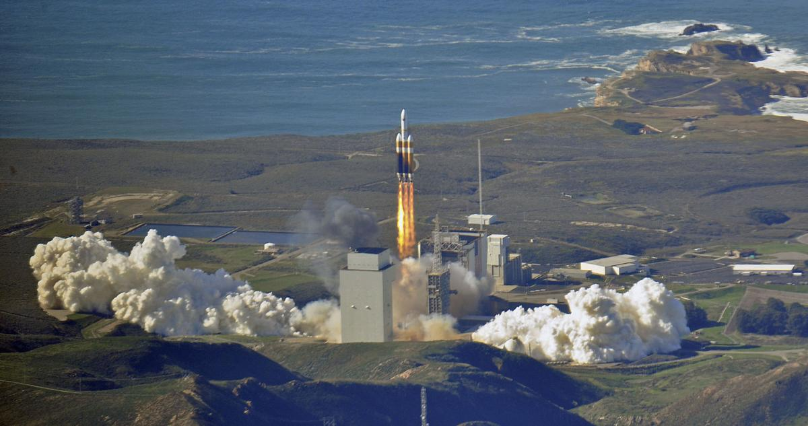

Informatie landingsplek
Dit dashboard geeft informatie over de landingsplek van het SpaceX Starschip. Het Starschip komt van Mars en gaat op aarde op de Vandenberg Air Force Base landen.
Dit dashboard geeft informatie over de landingsplek van het SpaceX Starschip. Het Starschip komt van Mars en gaat op aarde op de Vandenberg Air Force Base landen.
Regio:
Details:
Vandenberg Air Force Base is in 1 jaar in 2016 gebouwt. De base is voor het eerst gebruikt voor de SAOCOM 1A missie in october 2018.
Als de weerstomstandigheden goed zijn kleurt de achtergond groen.
Temperatuur:
Windsnelheid:
Helderheid: